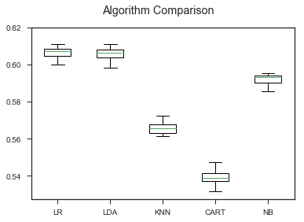
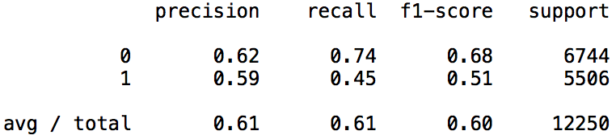

The models that were fit include: logistic regression, linear discriminant analysis, kNN, CART, and naive bayes. 20% of the data was held out and used as test data. The remaining 80% was used as training and were fit and tested using 10 fold cross validation. Logistic regression was used as the prediction model as it managed to predict with the highest accuracy. However, it must be noted that none of the models predicted particularly well. Logistic regression was only able to predict shot makes with 60.6% accuracy which is only 10% higher than random selection. The other models performed even more poorly. Below is a box plot that displays a comparison of the test accuracy calculated using cross-validation for the different prediction models fit on the dataset.
As you can see, logistic regression and linear discriminant analysis performed the best. The decision tree classifier (CART) and k-nearest neighbors performed only slightly better than random chance, and naive bayes fell behind simple logistic regression and linear discriminant analysis.
| Intercept | Shot Clock | Dribbles | Touch Time | Shot Dist | Close Def Dist | |
|---|---|---|---|---|---|---|
| Co-Efficiencts | 0.11205131 | 0.0151166 | 0.02581338 | -0.05661155 | -0.0600544 | 0.10205662 |
| Log Co-Efficients | 1.11857025301 | 1.0152314337 | 1.0261494306 | 0.9449610682 | 0.94171330298 | 1.10744617356 |
| Percentage | 12% | 1.5% | 2.6 | -5.5% | -5.8% | 10.7% |
From looking at the results of this logistic regression, we can see that the shot clock, number of dribbles, and the closest defender distance are all positively correlated with shot makes while touch time and shot distance are negatively correlated with shot makes. However, it does not look like there is a strong correlation between any o these variables. Among the selected attributes, closest defender distance is the most correlated with shot makes, while time on the shot clock and the number of dribbles taken don't seem to be correlated very much if at all. This seems to indicate that none of these quantitative factors have much of an effect on shot makes, which may be what is contributing to the relatively low prediction accuracy of the model.
| Made | Missed | |
|---|---|---|
| Made | 5004 | 1740 |
| Missed | 3039 | 2467 |
Above is the confusion matrix created by running the logistic regression on test data. Below is the precision, recall, f1-score, and support. Although the model is not a strong classifier overall, it is markedly better at predicting misses, as it has a significantly higher recall and f1-score than for makes. This gives us some insight on the problem we are trying to solve. It seems like there is a moderate relationship between our attributes and how they are affect shot makes.
As discussed earlier, shot distance, dribbles, shot clock pressure, and defender distance are all factors that can moderately affect shot makes. If we were to run this experiment again, one possible way to further this process is to categorize the closest defenders into separate groups. For example, we can categorize them into position, player height, player size, wingspan length, and other factors of that nature to get a better idea of what types of defenders are more effective and contesting shots. We can also do this with the shooting player to try and create factors for what types of players are more likely to make shots. This would reduce the number of features associated with the player_id while also giving them weight. Another issue is the sample size. All our samples are from the same year, so we may be able to generate a bettter model if we had data from multiple years. Although 60% may not be an extremely accurate predictor, the truth is there are probably a number of hidden features that affect whether a shot is made. In this model, we are able to quantify 20% of what affects shot makes (10% better than random chance).